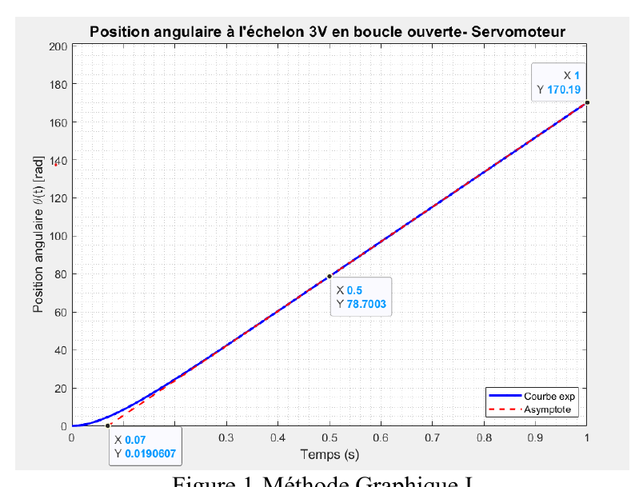
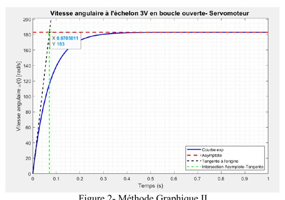

Motion control | System identification
Servomotor identification
Step-response reasoning and graphical identification of a servomotor model.
- Status
- Identification model
- Focus
- Automation
- Tools and methods
- Transfer functions / Identification / Control

Objective
Use a simplified motor model and response plots to estimate the parameters needed for later controller design.
Engineering work
- Work from a transfer-function representation.
- Use inverse Laplace reasoning to connect the model to a step response.
- Compare graphical approaches to estimating gain and time constant.
- Prepare the basis for a subsequent PID laboratory.
Outcome
The preparatory submission contains analytical work and two identification plots. Both plots are recovered as separate report excerpts.
Scope and limits
The archive establishes preparatory work, not a completed and validated PID implementation. No closed-loop performance improvement is claimed.
Archive gallery 1 item


Evidence and documentation
ELE3201 TP1 preparatory submission. The later PID brief is reference material, not evidence of a completed controller.